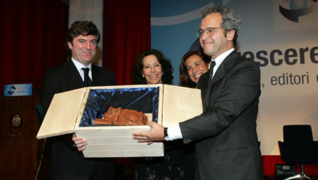
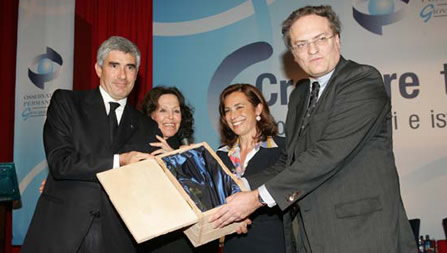

Mentana
e Alberoni
i preferiti dai giovani
Francesco Alberoni, il ‘sociologo dei sentimenti’
del Corsera, ed Enrico Mentana, direttore del
Tg5, sono i giornalisti che piacciono di più
ai giovani.
Li sentono più vicini, più chiari,
più capaci di toccare le corde del cuore
e della mente.
Suona così, il responso di un premio tutto
speciale: perché ha visto al voto una giuria
davvero inusuale, 750mila teenagers, e perché
è intitolato ufficialmente "Premio
Arte e Cultura La Bagnaia", ma nella
realtà si colora della memoria viva e palpitante
di Attilio Monti.
«Era un editore, non solo un petroliere,
e ho creato questo premio per ricordarlo»,
dice emozionata Marisa Monti Riffeser, la figlia.
E aggiunge,
davanti alla platea della convention "Crescere
tra le righe": «Lui ha dato tutto
per questo paese e credeva in questo paese, fino
a dire: ‘Se uno ha voglia di lavorare, l’America
è qui’». Per questo ha fondato
l’Associazione Attilio Monti, che come primo
atto ha ideato questo
Premio.
Il cui comitato d’onore, presieduto dalla
Signora Monti Riffeser, è costituito dai
Presidenti del Senato, della Camera, del Consiglio
e dai Ministri dei Beni culturali e delle Comunicazioni.
C’è anche Pierferdinando Casini,
Presidente della Camera, chiamato a premiare i
vincitori con Flavio Cattaneo, Direttore Generale
della Rai.
«Sono qui - ha detto Casini - per ricordare
uno straordinario protagonista, un uomo forte
e molto buono, capace di sentimenti, di generosità
verso i collaboratori che era sempre pronto a
stimolare. Visto quello che Marisa ha fatto in
questo luogo, il segno della vivacità d’impresa
di Attilio Monti ha degni eredi ».
I premi, dunque. A Francesco Alberoni una scultura
(raffigura una silhouette umana) di Pietro Cascella.
Il professore non c’era, ma ha mandato una
lettera: «Sono lusingato - scrive - da un
riconoscimento al mio scrivere di vita quotidiana,
di sentimento, di amore, di valori».
A ritirare il Premio per lui, il Direttore del
Corsera Stefano Folli. Applausi. Che diventano
ovazioni appena Marisa Monti Riffeser
annuncia il nome del secondo premiato, Enrico
Mentana: anche per lui una scultura,
la ‘Comunicazione’ di Cordelia von
den Steinen, moglie di Pietro Cascella. In più,
una medaglia offerta dal Presidente della Repubblica,
perché lui è stato il più
votato in assoluto. «La scelta fatta dai
ragazzi - dice - dà immensa soddisfazione
per la saggia coerenza e la continuità
voluta dall’azienda. Anche perché
collaboro con i vostri giornali». Anche
da lui un ricordo di Attilio Monti: «Un
talento che resta nella nostra storia e avrà
un posto speciale tra gli uomini
che quella storia l’hanno fatta ».
Paolo Pellegrini

Marisa Monti Riffeser e Flavio
Cattaneo premiano Enrico Mentana.

Marisa Monti Riffeser e Pier Ferdinando Casini
consegnano il premio di Francesco Alberoni al
direttore del Corriere della Sera Stefano Folli.
|